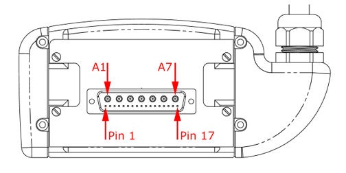

- 00000018WIA3072DD20GYZ
- id_131068933.4
- Jul 10, 2025 7:35:41 AM
1.5T 8-Channel High Res Brain Array Troubleshooting
Prerequisites
| Personnel Requirements | |||
|---|---|---|---|
| Required Persons | Preliminary requirements | Procedure | Finalization |
| 1 | - | 30 minutes | - |
| Tools and Test Equipment | |||
|---|---|---|---|
| Item | Quantity | Part number | Manufacturer |
| Digital Voltmeter (DVM) | 1 | - | - |
Overview
The following suggestions can be used to troubleshoot common problems with the 1.5T 8-channel High Resolution Brain Array Coil by Invivo, Catalog Number M3335LZ.
Receiving No Signal
- Problem
- Unable to Pre-Scan or Scanning and Unable to Receive a Signal.
- Possible Solution
-
- Verify that the port which is used to plug in the coil either has a green light illuminated (Port A or Port B) or a green lock (Port P1, P2, P3 or P4) indicated. This indicates the coil is properly plugged into the system.
- Verify that the system correctly detected the coil by checking the Currently Connected in the GUI as shown in the example in Currently Connected Coils Window.
Figure 1. Currently Connected Coils Window 
- Verify that the landmark is correct and that the cradle has not unlatched.
- Verify that the scan locations and any FOV offsets are correct.
- Perform a Continuity Check on the external cable. The Continuity Check must be performed by a GE-authorized Service Engineer. (Refer to Cable Continuity Check).
- Verify that the coil is positioned with the cable exiting towards the bore, and the system and coil polarity match.
- Finalization
-
- If still unable to receive a signal, try to scan (transmit and receive) with the Body Coil. For this test, be sure to remove the Imaging Coil from the magnet bore before scanning with the body coil. If still not receiving a signal, the problem may be with the MR system.
- If unable to scan with the substitute coil, there may be a system problem related to this particular coil type.
- If the scan completes successfully, there may be a problem with the Invivo coil. Contact GE for further assistance.
Image Quality
- Problem
- Poor IQ, Shaded Images or MCQA Fails.
- Possible Solution
-
- Perform a Continuity Check on the external cable. The Continuity Check must be performed by a GE-authorized Service Engineer. (Refer to Cable Continuity Check.)
- Verify that there are no loops in the cables.
- Verify that there are no metal or ferromagnetic objects close to the coil, patient or magnet (i.e., safety pin, hair pin).
- Verify that the coil is properly positioned.
- Verify that the center frequency is within the frequency adjustment range for the system.
- Verify that the R1, R2 and TG values from the pre-scan are within normally expected ranges.
- Finalization
-
- If not already done, perform a system Quality Assurance phantom test. If the obtained values do not fall within normal operating parameters, investigate further by performing a phantom scan with the Body Coil. For this test, be sure to remove the Imaging Coil from the magnet bore before scanning with the body coil. If still experiencing the same problems, there could be an MR system issue.
- If the body coil scan is satisfactory, acquire a scan using another coil of the exact same type (receive-only, phased array or transmit/receive - whichever applies) and the same system coil selection. If the image quality is visibly improved, there may be a problem with the Invivo coil. Contact GE for further assistance. If the image quality still suffers, there may be a system problem related to imaging with this type of coil.
Artifacts
- Problem #1
- Black Line or Signal Void on Image.
- Possible Solution #1
- Verify that there is no metal present in the area being scanned in or on the patient.
- Problem #2
- Some or All Images Appear Shaded or Exhibit Uneven Signal or Banding.
- Possible Solution #2
-
- Confirm that no metallic objects are located nearby, outside the FOV.
- This is especially important on images utilizing Fat Saturation. If Fat Saturation is being used, verify that the CFA fine adjustment was optimized.
Cable Continuity Check
- Problem
- System Does Not Recognize Coil or Reports MC Bias Errors with Coil Attached.
- Possible Solution
- Perform the cable continuity check as follows:
RF Signal Channels Check
Note The center pins of the System Connector that receive coaxial connectors are extremely fragile. Make sure you are very careful when measuring so that you do not break the center pins.
- With the coil cable disconnected, use a multimeter to ensure an open circuit condition exists between the designated pin and GND for each signal channel listed in Signal Channel Expected Readings.
- If one or more of the readings indicate a short, replace the cable. If all of the readings indicate an open circuit condition, proceed to the next section.
| Signal Channel | Coil Cable Connector | Function |
|---|---|---|
| MC-1 | Center A7 | GND |
| MC-2 | Center A6 | GND |
| MC-3 | Center A5 | GND |
| MC-4 | Center A4 | GND |
| MC-5 | Center A3 | GND |
| MC-6 | Center A2 | GND |
| MC-7 | Pin 2 | GND |
| MC-8 | Center A1 | GND |
| GND | Note: The points shown in Coil Cable Connector are common to GND. All outer [A] shells to Pins 1 and 3. | |

PIN Diode Control Channels Check
- With the coil cable disconnected, use a multimeter to determine continuity between the designated pins for each control channel below. Verify that the control pins are not shorted to GND. Refer to External Cable Expected Readings B.
- If one or more of the readings are >3Ω, replace the coil cable. If all readings are <3Ω, proceed to the next section.
| Control Channel | Coil Cable Connector | System Connector |
|---|---|---|
| MC Bias 1 | Pin 17 | J1 |
| MC Bias 2 | Pin 16 | J2 |
| MC Bias 3 | Pin 15 | J3 |
| MC Bias 4 | Pin 14 | J4 |
| MC Bias 5 | Pin 4 | J5 |
| MC Bias 6 | Pin 5 | J6 |
| MC Bias 7 | Pin 6 | J7 |
| MC Bias 8 | Pin 7 | J8 |
| GND | Note: The points in System Connector are common to GND. All outer [A] shells to Pins 1 and 3. | K1-K8, M6 |

PIN Diodes Check
- With the coil cable connected to the coil, use a multimeter to measure the diode drop across the coil connector pins as detailed in Pin Diode Expected Readings. Refer to System Connector for pin identification while performing this procedure.
- If one or more of the readings indicate a short, replace the coil. If all of the readings are correct, perform Coil Imaging Performance Verification again. If the problem still exists, replace the 1.5T HD 8-Channel High Resolution Brain Array Coil.
| System Connector | Reading | |||
|---|---|---|---|---|
| Positive Lead | Negative Lead | |||
| J1 | GND | [K1] | 1.7 | |
| GND | [K1] | J1 | Open | |
| J2 | GND | [K2] | 1.7 | |
| GND | [K2] | J2 | Open | |
| J3 | GND | [K3] | 1.7 | |
| GND | [K3] | J3 | Open | |
| J4 | GND | [K4] | 1.7 | |
| GND | [K4] | J4 | Open | |
| J5 | GND | [K5] | 1.7 | |
| GND | [K5] | J5 | Open | |
| J6 | GND | [K6] | 1.7 | |
| GND | [K6] | J6 | Open | |
| J7 | GND | [K7] | 1.7 | |
| GND | [K7] | J7 | Open | |
| J8 | GND | [K8] | 1.7 | |
| GND | [K8] | J8 | Open | |
Mechanical Parts Wear
Inspect the coil for visible signs of wear. If the coil housings will not seat with each other or if the latch mechanism does not work properly, refer to the FRU list for replacement parts.